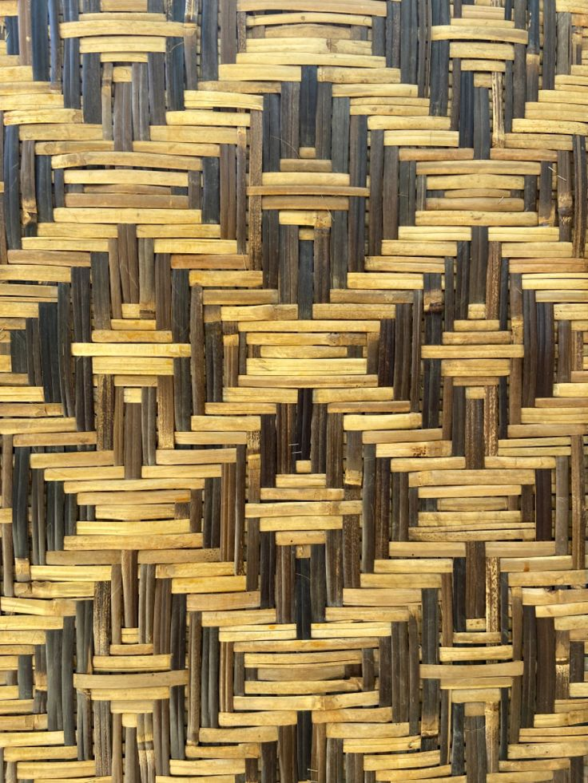

ANYAMAN BAMBU
Jika sedang berkunjung ke Jawa Barat, khususnya daerah subang,
jangan lupa untuk membawa pulang kerajinan khas Jawa Barat berupa anyaman bambu. Subang terkenal dengan amyaman
bambunya yang di sulap menjadi beberapa produk seperti tas, keranjang, topi, hingga perabotan rumah tangga.
Ada banyak desa di subang yang dijadikan sebagai sentra pengrajin
anyaman bambu. Kamu bisa datang langsung ke sana jika ingin mendapatkan harga yang lebih murahdaripada di pusat toko oleh-oleh.
sumber:Traveloka
ini adalah contohnya:
|  |
sumber:wikipedia